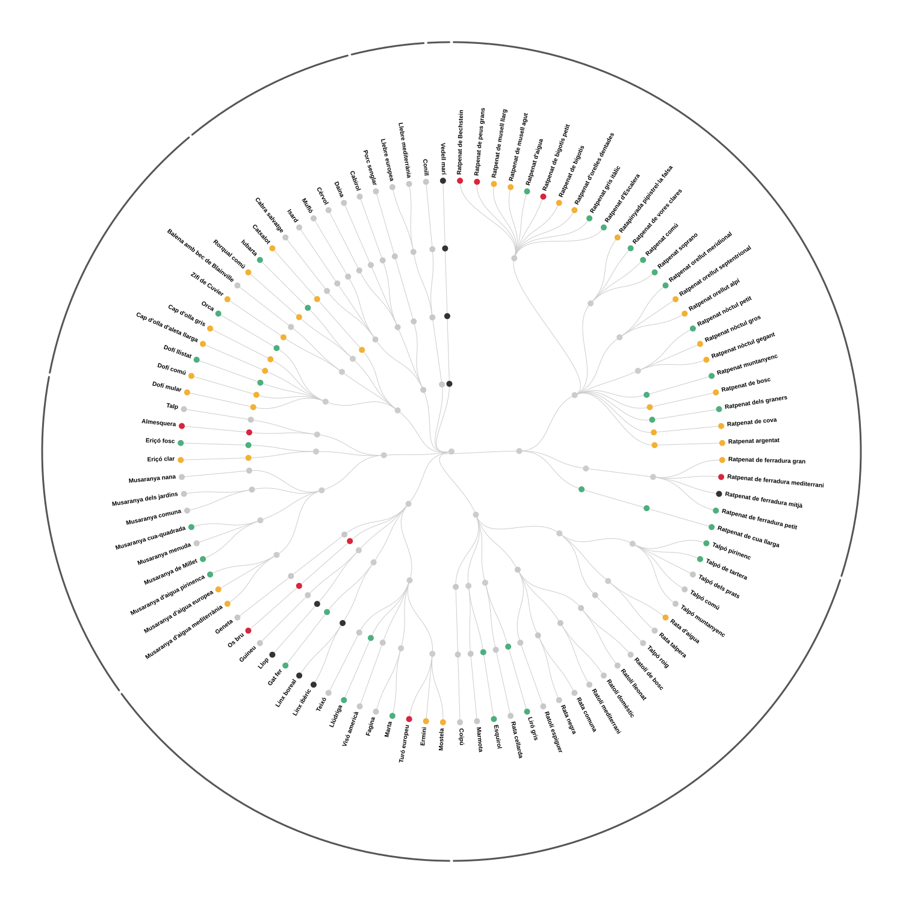

Obre el gràfic a mida completa per llegir-ne millor les etiquetes.

Com llegir el gràfic
L’arrel, al centre, representa tots els mamífers. Les branques es divideixen successivament en ordres, famílies i gèneres fins arribar a les espècies, situades a la circumferència exterior. Com més espècies té un grup, més part del cercle ocupa. Els arcs exteriors indiquen cada ordre i el nombre d’espècies que inclou.
El color de cada espècie mostra la seva categoria al catàleg de fauna amenaçada de Catalunya.
Categoria de protecció
- Sense protecció específica
- Protegida
- Vulnerable
- En perill d’extinció
- Extinta com a reproductora